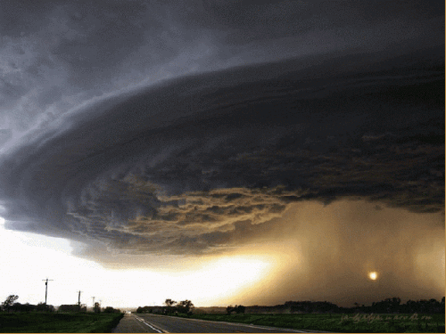

"Have you ever stopped to ponder the carbon footprint you're
leaving behind in your daily routines? From the food we consume to the modes of transportation we
choose, every action has an environmental impact. Let's take a moment to reflect on our choices
and strive for a more sustainable future."

Weather Centre
"Welcome to our Weather Center! Here, you can check the current
weather near you to stay informed and prepared. However, it's vital to understand that changing weather
patterns are linked to climate change. As our planet warms due to human activities, extreme weather events
become more frequent. By understanding local weather trends and their connection to climate change, we can
grasp the urgency of reducing our carbon footprint. Let's take action to protect our planet for future
generations. Explore our weather center while learning about combating global warming."